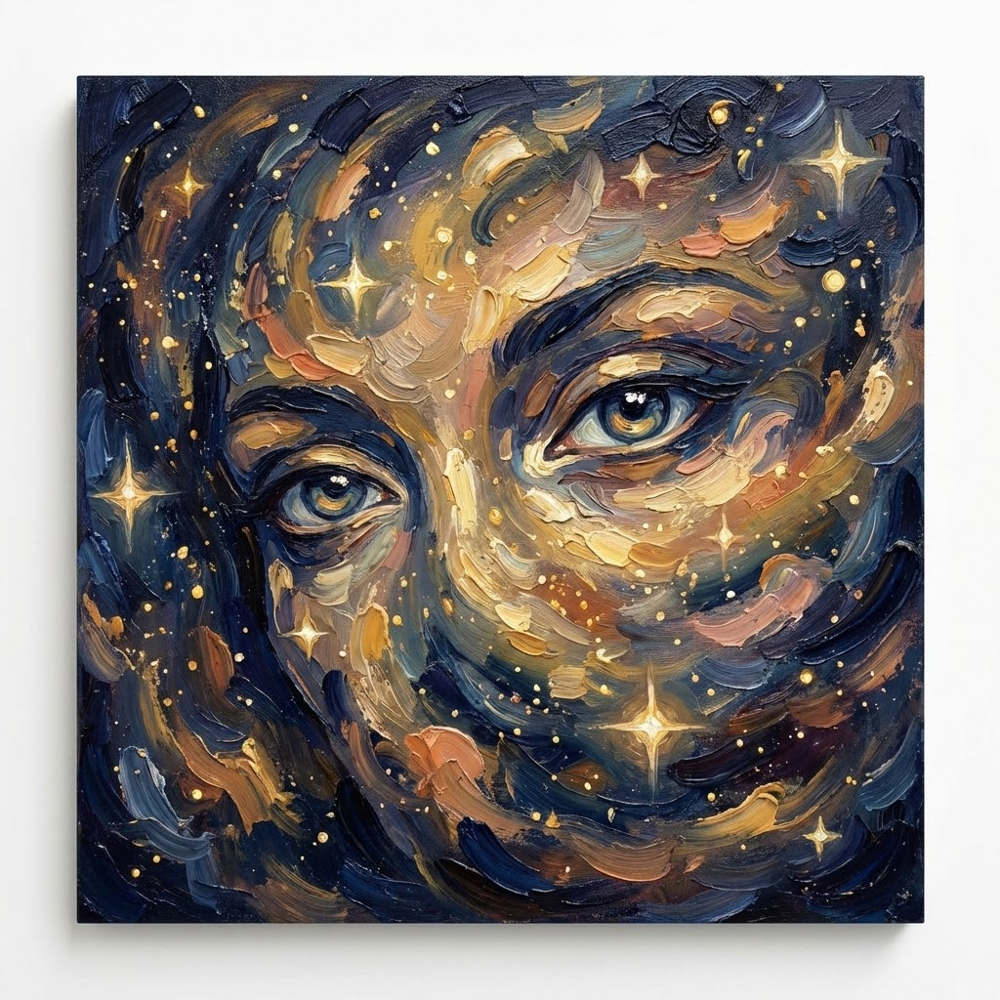

Modalità Poeta

Il cielo osserva e si sgomenta
le stelle esultano
quando un Poeta ti guarda.
I sensi condividono e si scambiano i poteri,
accarezzano con gli occhi e guardano con il cuore
le parole si fanno strumento per raggiungerti.
le stelle esultano
quando un Poeta ti guarda.
I sensi condividono e si scambiano i poteri,
accarezzano con gli occhi e guardano con il cuore
le parole si fanno strumento per raggiungerti.
Stai attento
quando un Poeta ti guarda!
Non è come gli altri:
dentro è bambino ma fuori
è di una bellezza antica.
quando un Poeta ti guarda!
Non è come gli altri:
dentro è bambino ma fuori
è di una bellezza antica.
Il Poeta,
dell'armonia in tutte le sue declinazioni esulta,
ma della miseria umana non s'indigna né prova pena
ma in un cambiamento sempre spera.
dell'armonia in tutte le sue declinazioni esulta,
ma della miseria umana non s'indigna né prova pena
ma in un cambiamento sempre spera.
Paola Spremulli